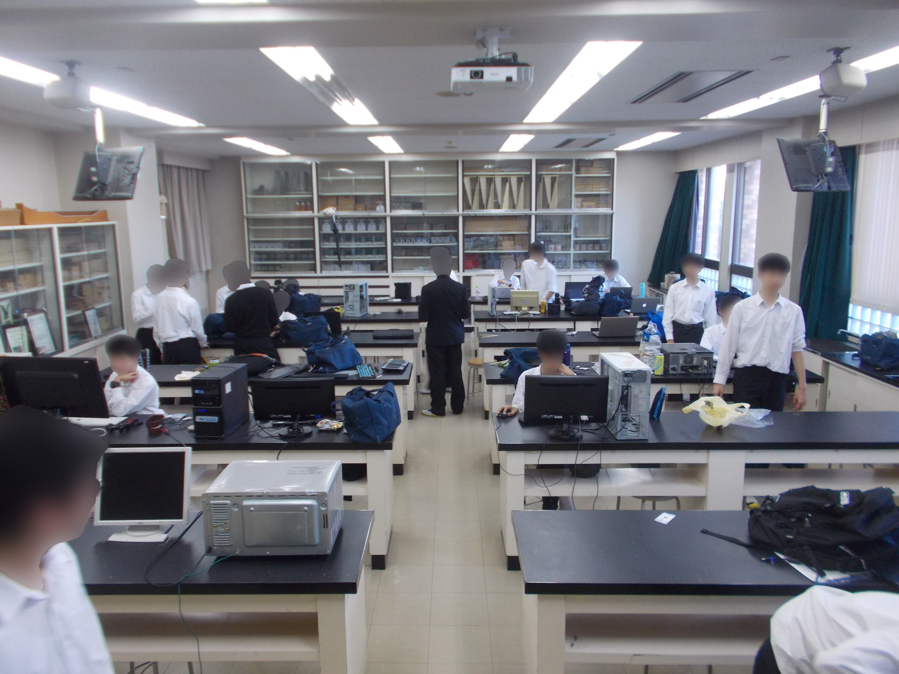
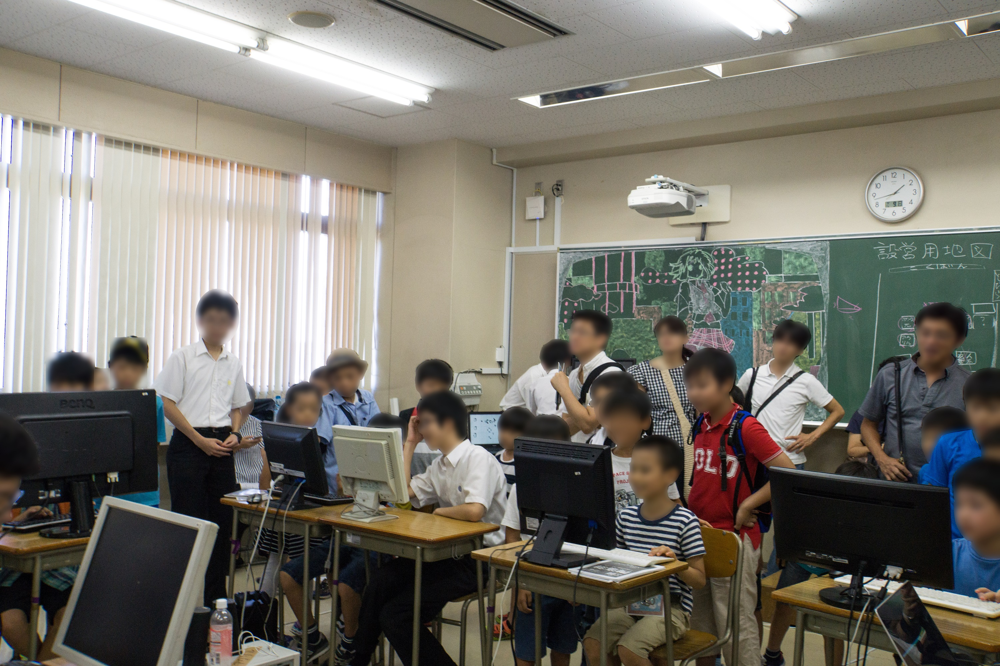
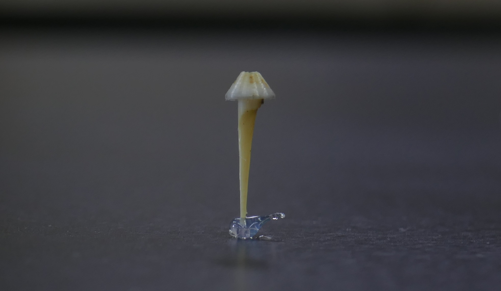

近況報告とか
前回の更新から一年ほど経ちました。この間に新しい中学1年生が入ってきたり、2018年の打越祭(文化祭)があったりしたので近況報告をしたいと思います。
今回のブログを書いているのは今までの人とは別の人です。
最近の物理部の様子の写真でも貼っておきます。中1も何人かいます。

中学1年生がたくさん入ってきた
今年は中学１年生がやたらとたくさん入ってきました。ざっと2,30くらいでしょうか。この人数は一部の運動部よりも多かったりするらしいです。部活動紹介のときに触らせた部員作成のゲームや電子工作の作品に興味を持ってくれたのかも知れません。
しかし今年度の中1に関して危惧されているのは、電子工作班の人数が入ってきた人数の割に少なすぎることです。現役の電子工作班員も、「人数が少なすぎて技術を受け継ぐのが難しいかもしれない」と言っていました。
また、多くの人が案の定幽霊になってしまいました。あまり人が多くてもモノが足りないので意味がないのですが、幽霊になってしまったのは残念です。そのせいもあって、今のところはパソコンをあと一、二台(新調|修理)すれば問題なさそうです。
2018年打越祭(文化祭)が終わった
2018年の打越祭が終わりました。第三十九回だそうです。今年は9月8日と9日に開催されました。全体としての様子など詳しい情報は打越祭公式Twitterなんかを見て頂ければわかりやすいと思います。

中華3Dプリンターを買った
2017年は、部費が少し余ったということで最後の方に前々からほしかった3Dプリンターを買うことになりました。
今回買ったのはQIDI TECHNOLOGYという中国・浙江省温州市の会社のX-ONE2です(ONEなのに2とは(笑))。アマゾンの商品ページが有ったので貼っておきます。

3Dプリンターというと、台湾のXYZ Printingが有名ですが、年度末で部費もあまり残っていないので、たくさんのプリンターの中でも高コスパだったこのプリンターを買うことになったようです。
実際にこのプリンターを使ってみての気になったことを書いていこうと思います。ただし、他のプリンターを使ったことがあるわけでもないので比較はできません。完全に独断です。
ほっとくとパイプの中で樹脂が詰まる
これは他のプリンターでも同じかも知れません。印刷が終わった後、掃除をしないとパイプの中で溶けた樹脂がつまりました。二回目の印刷でなかなか樹脂が出てこないと思ったら中にキノコが入っていました。

遅い
3Dプリンターってこんなに時間がかかるものなんですね。物理部では最初にテストとして5cm立方くらいの中が空洞の蓋がない立方体を印刷しましたが、かなり時間がかかって部活動終了時刻になってからは倉庫で一人動いてもらいました。
さすがに次の活動日には印刷が終わっていましたが。
モデリングが難しい
実は、プリンターを買ってから、テストとして最初についてきた3Dデータひとつと立方体を印刷した以外に何も印刷していません。
作りたいものが有っても、3Dのモデルを作ることが出来る人が物理部に居ないのです。
今、Blenderという3Dのソフトを勉強していたりするので、来年の文化祭でなにかできたらいいなと思っています。
最後に
ということで、最後まで読んでいただきありがとうございました。次回も早めに更新していきたいと思います。物理部にあった古いパソコンを何台か修理したりしているので、その報告でも書こうかと思っています。